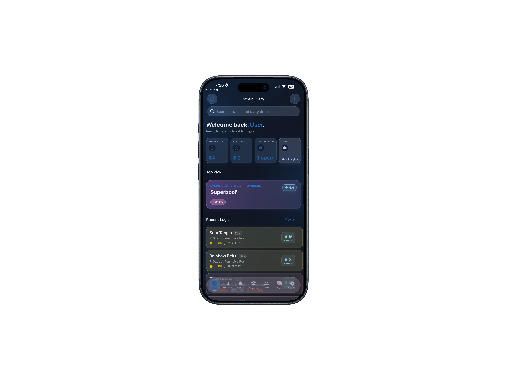

YOUR DIARY
Keep every useful detail together.
Log flower, pens and concentrates with photos, ratings, effects, flavor, brands, crosses and session notes. Search the details when you want to find something again.
- Photos and product details
- Ratings, effects and flavors
- Brands, crosses and session notes
